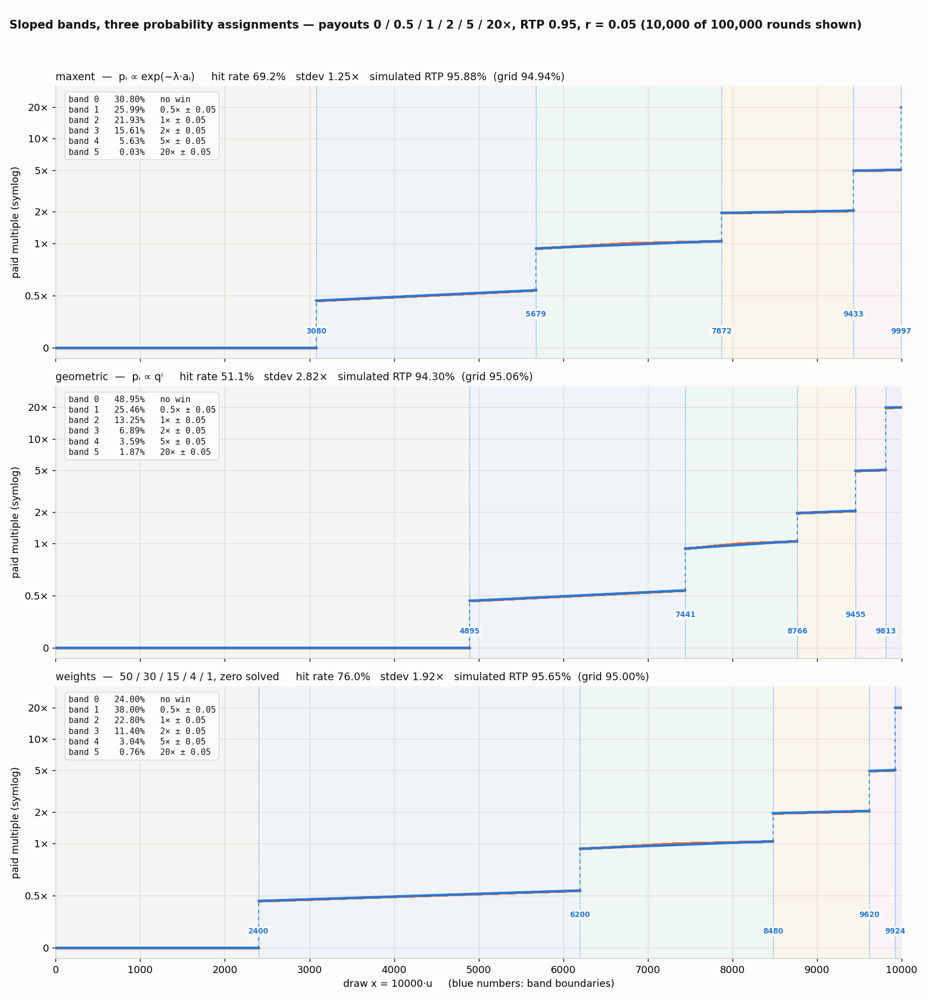
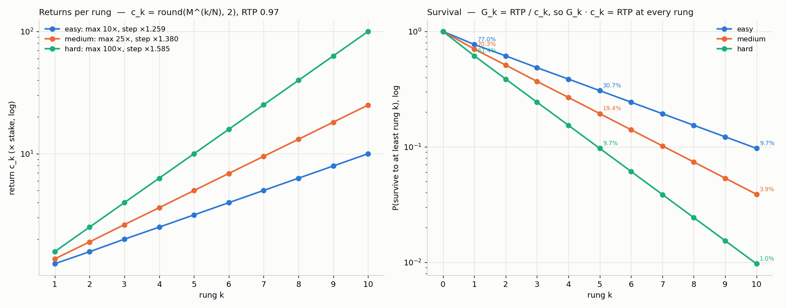
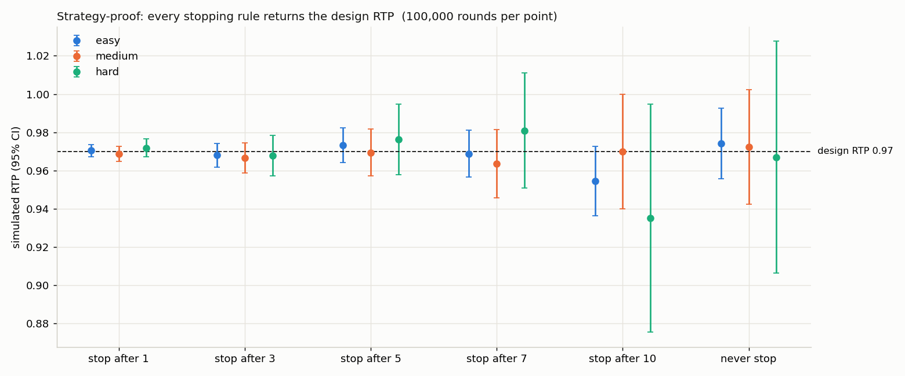

GNARONE GAME MATH
Two payout engines for the Rollerz RGS, each with an exact-RTP proof, a CLI, tests, and a playable demo. Every round is one uniform draw, fixed at bet time and shown after the round ends.
Play
GLASS BRIDGE STEPPER
Ten rungs of glass, cash out any time. Survival to rung k is RTP ÷ payoutk, so every stopping rule returns 97%. Easy 10×, medium 25×, hard 100×.
stepper-engine · one draw, ten revealsRED LIGHT GREEN LIGHT
The field is the 0–10000 draw. Zone widths are the probabilities; inside a zone the payout ramps a − r → a + r. Edit payouts, RTP and the probability method live.
payout-engine · sloped bands, exact Σ pᵢaᵢCURVE-BAND SIMULATION
10,000 simulated rounds of the step-band model plotted against the draw, with the paid-multiple distribution and the solved knots.
rgs-math · interactive chartThe math
- payout-engine / ALGORITHM.md — payouts + RTP in, monotone payout(u) out; maxent, geometric and weights probability rules; r = 0.1 × min payout gap.
- stepper-engine / ALGORITHM.md — the fair crash ladder: Gk = RTP / ck, strategy-proof by construction.
- rgs-math — the Rollerz provider contract, mock RGS server, table and curve tooling.
Figures



